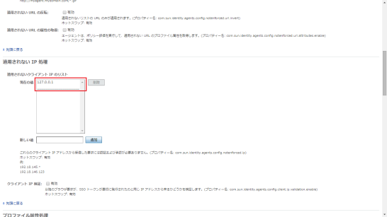
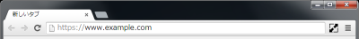
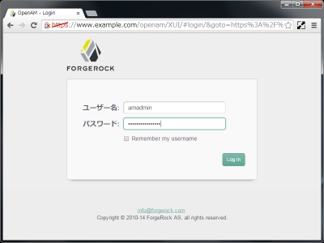
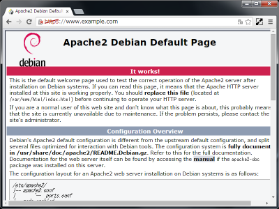

OpenAMとWeb Policy Agentを同じApacheインスタンスに同居させる [非公式手順]
実験用の環境を作るときにOpenAMサーバとWeb Policy Agentを同じ Apacheインスタンスに同居させて構成してみることにした。
OpenAMサーバが使うURLにだけWeb Policy Agentが反応しないようにするだけのこと、 と高をくくってはじめたのだが、想像を超えたハードなクエストに。
そのときにわかったことをまとめておく。
(2015/1/12更新)
更新履歴
| 日付 | 更新内容 |
|---|---|
| 2015/1/12 | 構成後にログインページへのリダイレクトが正しく行なえない 問題への対応手順を追加 (同時にhostsファイル調整が不要であることが わかったのでその部分を削除) |
| 2015/1/4 | 最初の投稿 |
目指した構成
OpenAMとWeb Policy Agentを同居させる場合の目指した構成は次のとおり。
- https://www.example.com/openam にアクセスするとOpenAMサーバが使える。
- https://www.example.com (の/openam以外) にアクセスするとWeb Policy Agent に保護されたアクセスとなる。
さらに構成する上で考慮しておく制約事項を次のとおりとする。
- VPS上に構成することも想定して1つのグローバルIPで構成する。
- サーバへはhttpsを使ってアクセスをする。プロキシ越しのアクセスを想定して ポート番号は443だけを使う。
- DebianがもつApache設定ファイルのわかりやすい構成を保つため、Apache のインスタンスは1つに保つ。
構成方法
OpenAMサーバをセットアップする
先に書いたエントリ DTIのVPS上にOpenAMをセットアップしてみた話 [非公式手順] の手順でOpenAMサーバをセットアップする。
TomcatのHTTP Connectorを有効にする
/etc/tomcat8/server.xmlのHTTP Connectorのコメントアウトを外す。
<Connector port="8080" protocol="HTTP/1.1"
connectionTimeout="20000"
URIEncoding="UTF-8"
redirectPort="8443" />
Tomcatを再起動して、HTTP Connectorを有効にする。
$ sudo service tomcat8 restart
Web Policy Agentをインストールする
先に書いたエントリ DebianにOpenAM Web Policy Agentをインストールする [非公式手順] の手順で、Web Policy Agentをインストールする。(動作確認以外の手順を実行する)
Agent Profileでの設定値
| 項目 | 設定値 |
|---|---|
| 名前 | www.example.com |
| サーバーURL | https://www.example.com:443/openam |
| エージェントURL | https://www.example.com:443 |
Web Policy Agentでの設定値
| 項目 | 設定値 |
|---|---|
| OpenAM server URL | https://www.example.com/openam |
| Agent URL | https://www.example.com |
| Agent Profile name | www.example.com |
この段階では、まだWeb Policy Agentは正しく動作しない。 このままでは以降の手順を実行するのに支障があるため、 Web Policy Agentを外してApacheを再起動する。
$ sudo a2dismod dsame
$ sudo service apache2 restart
OpenAMが使うURLをWeb Policy Agentの保護対象外にする
OpenAMの管理コンソール画面で、 [アクセス制御] → [/ (最上位のレルム)] → [エージェント] → [Web] → [www.example.com] → [アプリケーション] とたどる。
「適用されないURL処理」(Ignore Path Info for Not Enforced URLs) にOpenAMが使うURLを2つを指定して保存する。
- https://www.example.com/openam
- https://www.example.com/openam/*
同居しているWeb Policy Agentからのアクセスを保護対象外にする
OpenAMの管理コンソール画面で、 [アクセス制御] → [/ (最上位のレルム)] → [エージェント] → [Web] → [www.example.com] → [アプリケーション] とたどる。
「適用されないIP処理」(Not Enforced IP Processing Properties) に 127.0.0.1 を指定して保存する。
Web Policy AgentのNaming ServiceへのアクセスをTomcatに向ける
Web Policy Agentの起動用設定ファイルを編集する。
$ cd /opt/openam/web_agents/apache24_agent/Agent_001/config/
$ sudo vi OpenSSOAgentBootstrap.properties
Naming ServiceのURLを指定している箇所のURLを http://localhost.com:8080/... に変更する。
com.sun.identity.agents.config.naming.url = http://localhost:8080/openam/namingservice
OpenAMのNaming Serviceが応答するURLをTomcatに向ける
Web Policy Agentの初期化段階でアクセスエンドポイントについて、 Naming Serviceが応答するURLをTomcatに向ける。
OpenAMの管理コンソール画面で、[設定] → [システム] → [ネーミング] とたどる。
セッションサービスURLとポリシーサービスURLのの2つについて、次のように 設定を書き換え [保存] する。
| 属性名 | 設定値 |
|---|---|
| セッションサービスURL | http://localhost:8080/openam/sessionservice |
| ポリシーサービスURL | http://localhost:8080/openam/policyservice |
この変更で、このホスト以外で動作するWeb Policy Agentの動作に支障が 出るようになる。Naming Serviceがこのホスト外のWeb Policy Agent へ適切な応答をするように、Apacheのmod_substituteとmod_filter を使ってNaming Serviceの応答を書き換える。
書き換え設定のポイントは次のとおり。
- /openam/namingservice の応答を書き換える。
- http://localhost:8080/ を https://www.example.com/ に書き換える。
- 応答に Content-Type が指定されていないので、mod_filterを使って常に書き換えを行なうようにフィルタの登録をする。
mod_substituteとmod_filterを有効にする。
$ sudo a2enmod substitute filter
Apacheの設定ファイルを開く。
$ sudo vi /etc/apache2/sites-available/default-ssl.conf
<Location /openam> … </Location> のブロックの後ろに、 次の6行を書き足す。
<Location /openam/namingservice>
Substitute s!http://localhost:8080/!https://www.example.com/!
FilterDeclare namingrewrite
FilterProvider namingrewrite SUBSTITUTE true
FilterChain namingrewrite
</Location>
書き足した後は、こんな感じになる。
<Location /openam>
ProxyPass ajp://localhost:8009/openam
</Location>
<Location /openam/namingservice>
Substitute s!http://localhost:8080/!https://www.example.com/!
FilterDeclare namingrewrite
FilterProvider namingrewrite SUBSTITUTE true
FilterChain namingrewrite
</Location>
</VirtualHost>
(2015/1/12節全体を削除)
Debianのインストール直後の状態では、/etc/hostsで自ホストのIPアドレスが
127.0.1.1に設定されている。(理由は今のところ不明だが) 自ホストの
IPアドレスが127.0.0.1でなければ正しく動作しない。
/etc/hostsを次のように変更する。
変更前
127.0.0.1 localhost
127.0.1.1 www.example.com www
変更後
127.0.0.1 localhost www.example.com www
#127.0.1.1 www.example.com www
OS再起動時の問題をワークアラウンドする
OSを再起動したときに、OpenAMが動作するTomcat、Web Policy Agentが組み込まれた Apacheともに自動起動される。実際はApacheの方が起動完了が早いため、 Web Policy Agentが初期化に失敗し、コンテンツへのアクセスができなくなる。
Web Policy Agentの初期化のリトライを設定することで、この問題に対処する。
Web Policy Agentの起動用設定ファイルを編集する。
$ cd /opt/openam/web_agents/apache24_agent/Agent_001/config/
$ sudo vi OpenSSOAgentBootstrap.properties
ファイルの最後の部分にリトライに関する設定項目があるので、次のとおり 設定を変更する。
com.forgerock.agents.init.retry.max = 5
com.forgerock.agents.init.retry.wait = 60
Web Policy Agentを有効にしてApacheを再起動する
$ sudo a2enmod dsame
$ sudo service apache2 restart
動作確認
https://www.example.com にアクセスする。
OpenAMの認証画面が表示される。
コンテンツが表示される。
構成上のポイントの解説
冒頭にも書いたとおり「OpenAMサーバが使うURLにだけWeb Policy Agent が反応しないようにするだけのこと」と高をくくっていたが、実際は それができなかった。その点についてわかったことを書き出しておく。
Web Policy Agentを普通に構成するとApacheが無応答となる
Apache用のWeb Policy Agentは、Apacheモジュールとして実装されており、 child_initとaccess_checkerをhookして動作するようになっている。
child_initのhookでは、Apacheのプロセスが生成されたときにPolicy Agentの 機能の初期化を行なっている。access_checkerのhookでは、 コンテンツアクセス時の認証状態とアクセスポリシーのチェックを行なっている。
Policy Agentは、初期化を行なう際に、OpenAMサーバのサービス用エンドポイントへ 次の順番でアクセスする。
- Naming Service
- Authentication Service
- Identity REST Services
- Naming Service
- Session Service
- Policy Service
Web Policy Agentの実装をみると、一連の処理が終了しない限り、HTTP/HTTPS のリクエストは受け付けられない (TCP接続はLISTENキューに入ったままACCEPT されない) ようになっており、また一連の処理中にエラーがあった場合は、 child_initが 500 (Internal Server Error) を返すようになってる。
そのため、今回トライしたOpenAMとWeb Policy Agentを同じApacheインスタンスに 同居させる構成の場合、
- Apacheが起動される
- Apacheのサービス用のプロセスが開始する
- child_initが呼ばれる
- Policy Agentの初期化を行なう
- OpenAMのエンドポイントにアクセスする
- その接続は、child_init中のApacheが受ける
- Apacheのchild_initが終了するまで待たされる (ここでデッドロックする)
という動きとなり、Apacheは無応答となってしまう。
今回のトライでは、child_initの段階で必要なOpenAMサーバへの接続を Tomcatへ直接行なうように構成することで問題を回避している。
Web Policy Agentがサービス用エンドポイントのURLを求める仕組み
(この節の説明は、一部推測している事項が含まれています)
Web Policy Agentの初期化の段階でアクセスするエンドポイントは、 次の方法で求めされている。
| No | エンドポイント | URLの求め方 |
|---|---|---|
| 1 | Naming Service | OpenSSOBootstrap.propertiesの中で com.sun.identity.agents.config.naming.url に設定されたURLを使う。 この段階ではNaming ServiceはOpenAMに設定 されている値をそのまま応答する。デフォルトでは %protocol://%host:%port%uriで始まる値となっている。 |
| 2 | Authentication Service | Naming Serviceが返したURLを使う。 %protocol, %host, %port, %uri の部分は、 Naming ServiceのURLを基に置き換えられる。 |
| 3 | Identity REST Services | (同上) |
| 4 | Naming Service | 1.と同じURLを使う。 この段階ではWeb Policy Agentが認証済みとなっている ことから、Naming Serviceは %protocol, %host, %port, %uri の部分をAgent がアクセスすべきサーバの情報に置き換えて応答する。 今回の例で言えば、https://www.example.com:443/openam に置き換えて応答する。 |
| 5 | Session Service | 4.のNaming Serviceが返したURLを使う。 |
| 6 | Policy Service | (同上) |
今回のトライでは、com.sun.identity.agents.config.naming.urlと、 OpenAMのNaming Serviceが応答するセッションサービスとポリシーサービスのURL をhttp://localhost:8080/で始まるものに変更することで、 child_initの段階で必要なOpenAMサーバへの接続をTomcatへ直接行なうことを 実現している。
Web Policy AgentはLoginリダイレクト前にHEADリクエストする
認証されていないアクセスの場合、Web Policy AgentはOpenAMサーバの ログインページへリダイレクトをする。
Web Policy Agentはログインページへのリダイレクト前にOpenAMサーバの 稼動状態を調べるためにサーバルート (今回の例では https://www.example.com/) へHEADリクエストを投げる。
Web Policy Agentで保護されたWebサーバとOpenAMサーバのサーバ名が同一 である場合、このHEADアクセスが失敗し、ログインページへのリダイレクトが 正しく行なわれない。
今回のトライでは、Web Policy Agentへのローカルホストからのアクセスを 保護対象外とすることで、この問題を回避している。
所感
はまりどころが多く、実現に苦労はしたが、何とか思った動作にすることができたと いったところ。はまったときに動作をだいぶ追いかけたので、OpenAMと Web Policy Agentの動作の理解をいくらか深められたことが収穫だったかなと。
でもまぁ、docker で、OpenAMのコンテナとWeb Policy Agentのコンテナ作って実現 するほうがイマドキのやり方なのかもしれない、と実験を終えてふと思った。